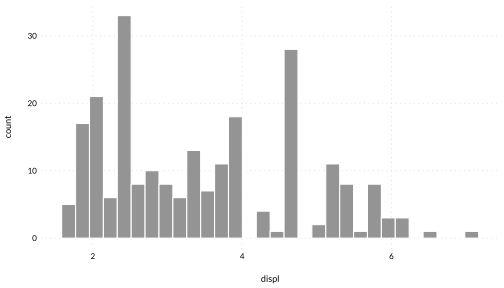
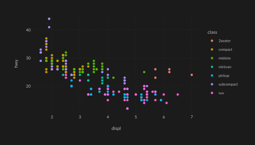
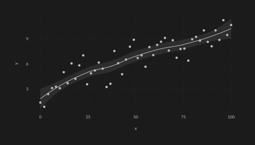
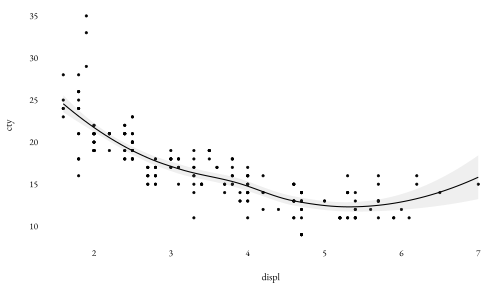
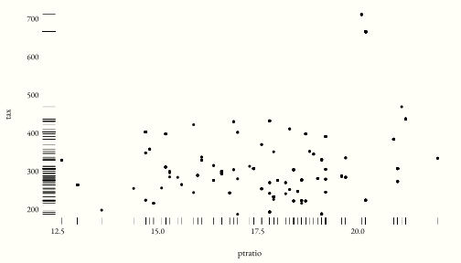

A clean theme for ggplot2 with matching geom defaults.
Installation
Install from GitHub using the devtools package:
devtools::install_github("dbarrows/wplot")Possible CRAN version in the future.
Examples
Light Theme
ggplot(mpg, aes(displ, hwy, colour = class)) +
geom_point() +
theme_wl()
ggplot(mpg, aes(displ)) +
geom_histogram(bins = 30) +
theme_wl()
Options
The grid can be turned on/off with the grid option, and the font can be a made serif:
library(gapminder)
library(dplyr)
gapminder %>%
mutate(cc = I(country_colors[match(country, names(country_colors))])) %>%
filter(continent %in% c("Africa", "Europe") & year == 2007) %>%
ggplot(aes(log(gdpPercap), lifeExp)) +
geom_point(aes(colour = cc, size = sqrt(pop/pi)/1500)) +
theme_wl(grid = FALSE, serif = TRUE) +
theme(legend.position = "none")
Dark theme
ggplot(mpg, aes(displ, hwy, colour = class)) +
geom_point() +
theme_wd() +
theme(plot.margin = margin(1, 1, 1, 1, "cm"))
ggplot(mpg, aes(hwy)) +
geom_histogram(bins = 30) +
theme_wd() +
theme(plot.margin = margin(1, 1, 1, 1, "cm"))
tibble(x = seq(0, 100, length.out = 50),
y = sqrt(x) + rnorm(length(x))) %>%
ggplot(aes(x, y)) +
geom_point() +
geom_smooth() +
theme_wd() +
theme(plot.margin = margin(1, 1, 1, 1, "cm"))
Classic theme
For a slightly larger serif font, smaller points, and no grid.
mpg %>%
ggplot(aes(displ, cty)) +
geom_point() +
geom_smooth() +
theme_wc()
Tufte theme
You can get the Tufte look:

h <- Boston %>%
pull(tax) %>%
hist(plot = FALSE)
df <- h %>%
with(tibble(tax = mids, count = counts))
ybreaks <- seq(20, max(df$count), by = 20)
df %>%
ggplot(aes(tax, count)) +
geom_col(orientation = "x", width = diff(h$breaks[1:2])/2) +
scale_y_continuous(breaks = ybreaks) +
theme_wt() +
geom_hline(size = 0.75,
yintercept = ybreaks,
col = theme_wt()$plot.background$fill)